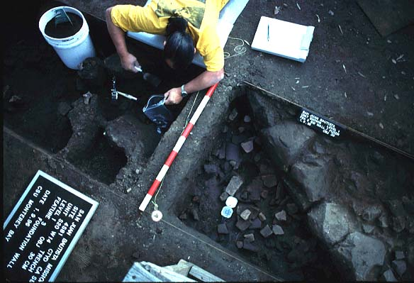

|  |
Archaeology at Mission San Juan Bautista
The current programme of archaeological investigations being undertaken at the Old Mission of San Juan Bautista were initiated under my direction in October of 1995 and first reported at the annual meetings of the Mission Studies Association in April of 1996. Father Edward Fitz-Henry, the current Parish priest and administrator of Mission San Juan Bautista, first sought this collaboration in an effort to find assistance in the development of an historic preservation plan for the Old Mission. Since that time, several project initiatives have been undertaken so as to accomodate the ongoing effort to prepare for the planned bicentennial celebrations of the Old Mission that will commence on June 21 and 22nd of 1997. In addition to the archaeological investigations documented here, the Alta California Mission Research Project of the California State University Monterey Bay has also undertaken other related efforts that include: (a) the EDM-based electronic survey and mapping of the Old Mission and adjacent adobe structures, (b) the creation of a CD-ROM based interactive instructional program (see Mendoza & Halla 1997 Society for California Archaeology conference paper for an overview of the program in question), (c) an ongoing program of consultation and intervention centered on the renovation and restoration of existing mission era facilities including the original Indian Chapel of 1799, (d) the development of a Museum Education Project specifically devoted to the renovation, restoration, and redevelopment of the exhibits and displays of the Old Mission Museum, and (e) the coordination of professional and volunteer efforts to restore the mission grounds and gardens, including the restoration and reconsolidation of the Old Mission water well and related historic features.